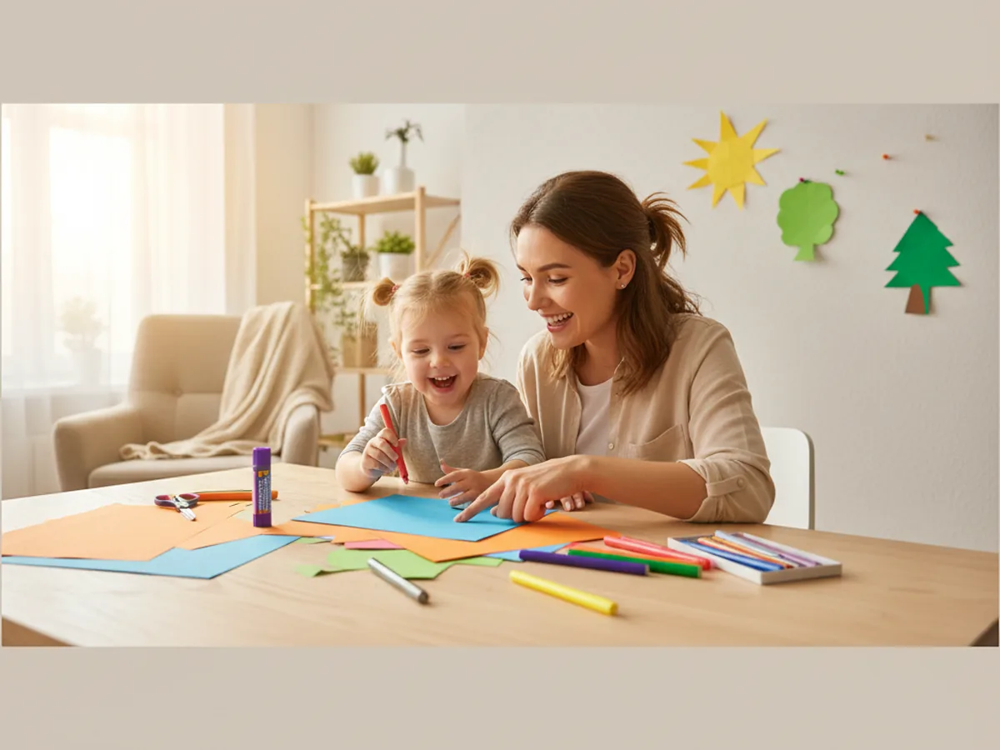
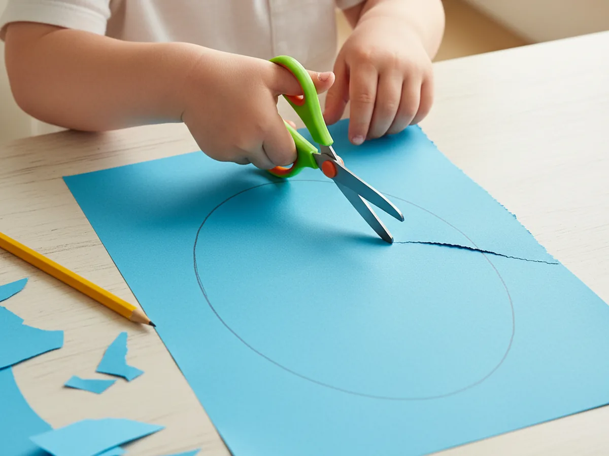
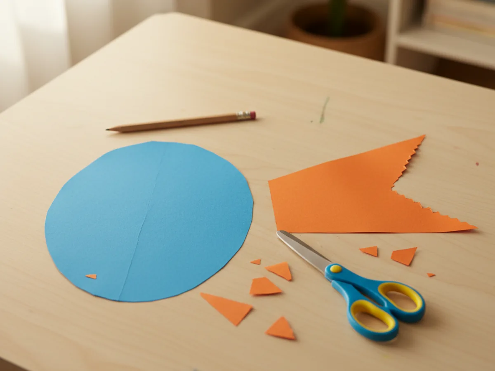
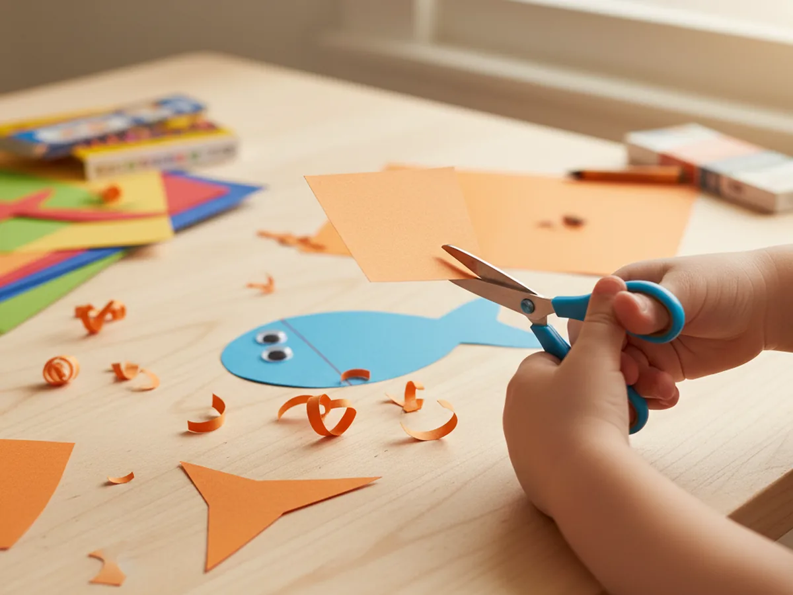
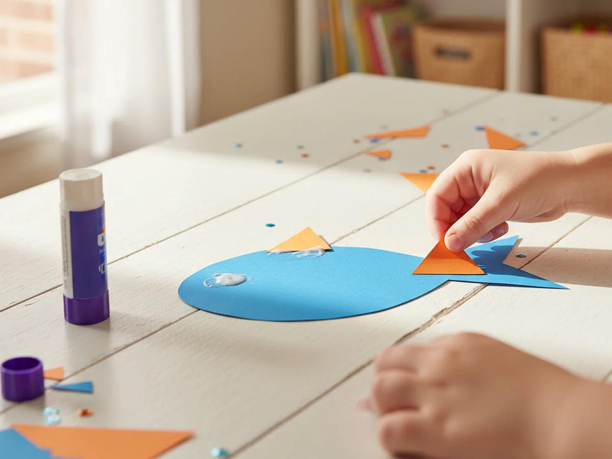
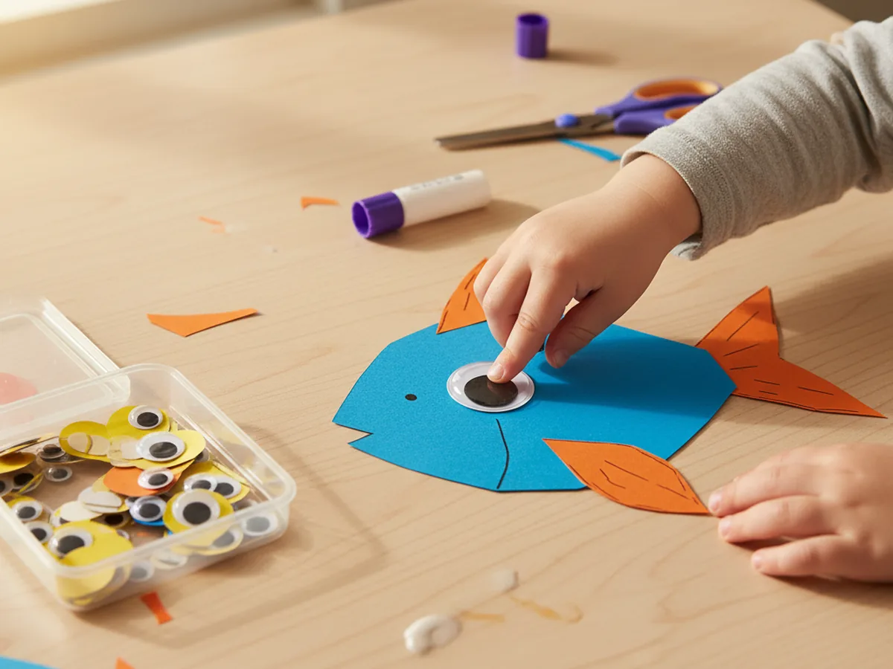
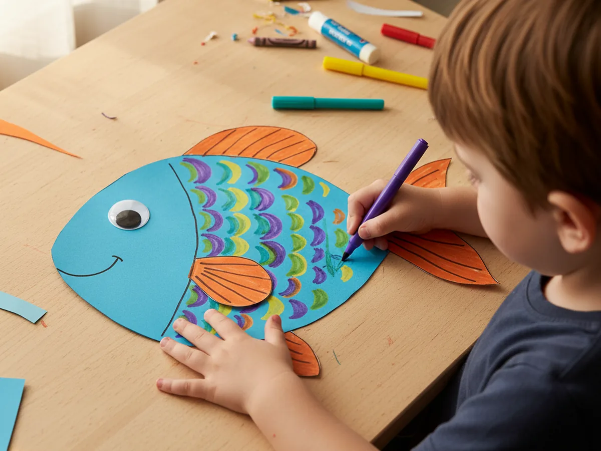

Fish are endlessly fun for little ones, and this easy paper fish craft is one of those rare projects that comes together in no time and looks absolutely adorable when it is done. All you need is some colored construction paper, a pair of child-safe scissors, a glue stick, and a googly eye. No paint, no mess, no stress. Whether you are doing this on a rainy afternoon or looking for a simple summer activity, this paper fish craft is a winner every single time. 🌊
The best part? Kids as young as 3 can do most of the steps with just a little help, and older kids can go completely wild decorating their fish however they want. Every fish turns out a little different, and that is exactly what makes this craft so special.
Why Kids Love This Craft
There is something really satisfying about watching a flat piece of paper turn into a recognizable creature, and kids feel that sense of wonder every time. With this paper fish craft for kids, they get to make something they can immediately be proud of, and the whole process is straightforward enough that they feel capable and confident from the very first cut.
Cutting and tracing build fine motor skills and hand-eye coordination. Gluing pieces together helps with spatial thinking. And the decorating step at the end gives children total creative freedom, which is wonderful for imagination and self-expression. It feels like play, but there is so much learning happening quietly underneath.
Kids also love that the result looks like a real fish. They can display it on the fridge, create a whole paper aquarium scene, or bring it in for show-and-tell. That sense of pride in a finished, recognizable project is something every child deserves to experience.

What You'll Need
Here is everything you will need to make this simple paper fish craft at home. Lay it all out before you get started so the whole activity flows smoothly.
- Crayola Construction Paper (240 sheets, assorted colors), the base of the whole craft, bright colors work best.
- Fiskars Training Scissors for Kids, spring-action and blunt-tipped, perfect for ages 3 and up.
- Elmer's School Glue Sticks (30-pack), washable and easy for small hands to use.
- DECORA Self-Adhesive Googly Eyes (assorted sizes), one per fish, peel and press.
- Crayola Washable Broad Line Markers, for drawing scales and details.
- A pencil, for tracing the fish body shape before cutting.
Step-by-Step Instructions
This paper fish craft step by step is easy to follow, even for beginners. Take it one step at a time and let your child do as much as they can on their own.
Step 1: Trace and Cut the Fish Body
Start by choosing your main paper color. Blue, purple, orange, red, or yellow all make wonderful fish. Take a full sheet of construction paper and use a pencil to draw a large oval or egg shape that fills most of the page. The wider end will be the fish's head, and the narrower end will be the tail side. Once the shape is drawn, have your child cut it out along the pencil line.
For younger children (ages 3 to 4), trace the shape for them first and let them practice cutting along the line. Slightly wobbly edges are completely fine, and in fact they give the fish a wonderfully handmade look.

Step 2: Cut the Tail Fin
Now pick a contrasting color for the tail fin. If your fish body is blue, orange or yellow makes a beautiful contrast. Cut a large triangle from this second color. The triangle should be roughly as tall as the narrow end of the fish body, so the tail looks proportionate and bold when it is glued on. A bigger tail tends to look more fun and dynamic, so go generous with the size.

Step 3: Cut the Smaller Fins
From the same contrasting paper, cut two smaller triangles for the dorsal fin (top) and belly fin (bottom). These do not need to be identical. Irregular shapes actually look more natural on a handmade fish. Keep them roughly the size of a thumbprint to a small coin, so they sit neatly on the body without overwhelming it.

Step 4: Glue the Fins onto the Body
Time to assemble! Help your child apply a good layer of glue stick to the back of the large triangle tail fin and press it firmly against the narrow end of the fish body so it peeks out like a real tail. Then glue one small fin near the top edge and one near the bottom edge of the fish body. Hold each piece in place for a few seconds so the glue catches properly.
At this point your fish is really starting to come to life, and most kids cannot wait to get to the next step. Let them take a moment to admire the shape before moving on!

Step 5: Add the Googly Eye
Peel the backing off one self-adhesive googly eye and let your child press it firmly onto the wide end of the fish body, roughly in the center of that round head area. The googly eye is always a crowd-pleasing moment. The fish suddenly looks alive, and kids immediately want to name it. Our last one was named "Bubbles," which felt very appropriate.

Step 6: Decorate with Markers
This is the most creative step, and kids absolutely love it. Using washable markers, have your child draw a pattern of overlapping arcs across the body to mimic fish scales. Curved rows of small half-circles stacked up like roof tiles is a classic look. Then draw a small curved line near the front of the head for a little smile.
From there, the decorating is completely open-ended. Dots, zigzags, wavy lines, polka dots, rainbow stripes, you name it. Encourage your child to make their fish completely unique. The markers are washable, so let them be bold and fearless with color. 🐟

Variations to Try
Underwater Scene: Make three or four fish in different colors and sizes, then glue them all onto a large piece of blue construction paper. Add strips of green paper for seaweed, torn tissue paper for coral, and a yellow circle for the sun shining above the water. It turns into a beautiful ocean mural your child will want to keep forever.
Tissue Paper Fish: Skip the marker decorating step and instead have your child tear small pieces of colored tissue paper and glue them all over the fish body in layers. The overlapping tissue creates a gorgeous jewel-toned, almost stained-glass effect. This version is lovely for older kids (ages 5 and up) who want a more intricate result.
Mini Fish Mobile: Make five or six small paper fish in different bright colors and tie each one to a length of yarn. Attach the yarn pieces to a wooden stick or bamboo skewer and hang it near a sunny window. The fish sway gently in any breeze and make an adorable bedroom decoration.
Final Thoughts
This paper fish craft is one of those projects that manages to be simple enough for a toddler but satisfying enough for a school-age child too. It takes about 20 minutes from start to finish, uses only basic supplies, and creates zero mess beyond a few paper scraps that sweep up in seconds. Most importantly, it gives you and your little one a real shared moment of making something together. 🎨
If your child makes their fish, I would love to see it! Share a photo on Pinterest and pin this article so other craft-loving mamas can find it easily. Happy crafting!
More Crafts You'll Love
If your little one enjoyed this paper fish craft, they will love these other fun animal paper crafts too: